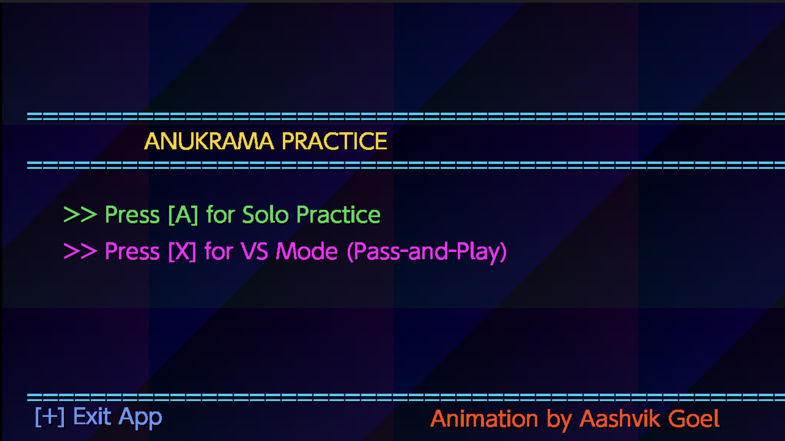
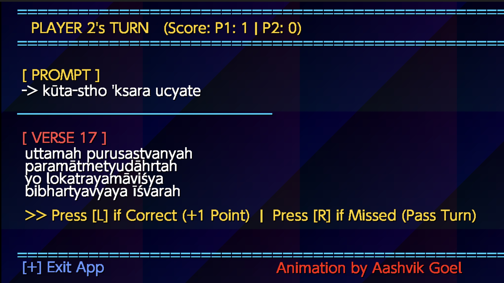

अनुक्रम
Anukrama
Practice and memorize the Bhagavad Gita one verse at a time on your Nintendo Switch or in your browser.



भगवद्गीता
What is the Bhagavad Gita?
The Bhagavad Gita is a 700-verse conversation between Krishna and Arjuna, set on a battlefield just before a great war. Arjuna is struggling with fear, responsibility, and whether he should fight. Krishna responds by teaching him about duty, action, knowledge, devotion, meditation, and the nature of the self.
For someone familiar with American culture, one useful comparison is the Bible. The Bible is a central collection of sacred writings for Christians, while the Bhagavad Gita is one of the most important sacred texts in Hinduism. Both are studied for spiritual guidance and questions about how to live, but they come from different religious traditions and contain different teachings.
The Bible
A collection of sacred writings central to Christianity, containing many different books, genres, teachings, stories, poetry, history, and accounts of Jesus.
The Bhagavad Gita
A dialogue between Krishna and Arjuna that explores duty, action, devotion, knowledge, meditation, and the nature of the self.
The comparison is simply meant to give newcomers a familiar reference point. Hinduism and Christianity are distinct religious traditions.
Why I Built Anukrama
This started as a project for myself. While practicing Bhagavad Gita verses, I realized there wasn't an easy way to quiz myself without someone else helping.
I thought my Nintendo Switch would actually make a fun platform for it, so I built Anukrama. Instead of simply reading a verse, the game gives you a prompt and asks you to recall what comes next.
Hopefully it helps other people memorize verses as much as it helps me.
How It Works
Anukrama turns verse memorization into a simple practice game.
Choose a verse
Pick the verse you want to practice.
Read the prompt
The previous quarter of the verse is shown on screen.
Chant
Recite the next part of the verse from memory.
Check your answer
Reveal the verse and see whether you remembered it correctly.
Gameplay
See Anukrama in action.
Features
Guided Verse Practice
Practice one verse at a time instead of trying to memorize an entire chapter at once.
Sanskrit Audio
Listen to Sanskrit audio recordings while practicing pronunciation and memorization.
English Transliteration
Practice Sanskrit verses using easy-to-read English transliteration.
Local VS Mode
Challenge a friend in a pass-and-play mode on the same Nintendo Switch.
Chapter 15
The current release includes all 20 verses of Bhagavad Gita Chapter 15.
Nintendo Switch Homebrew
Built natively for Nintendo Switch using C and libnx.
Browser Version
Try the practice experience directly in your browser without a Nintendo Switch.
Open Source
The source code is publicly available and open to contributions.
Roadmap
Anukrama is still being developed.
Download Anukrama
Download the latest build of Anukrama for your Nintendo Switch or emulator.